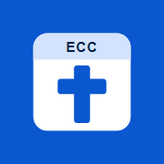

Office Hours
ECC Seattle staff schedule, leave and timesheets
Add a one-tap Office Hours icon to your home screen. Stay on this page and follow the steps for your phone.
iPhone
- Make sure this page is open in Safari (or Chrome).
- Tap the Share button: at the bottom of the screen in Safari, top right in Chrome.
- Scroll down and tap Add to Home Screen, then Add.
Android
- Make sure this page is open in Chrome.
- Tap the menu ⋮ at the top right.
- Tap Add to Home screen (or Install app), then Add.
Opened this from Gmail, Teams or another app? Open it in Safari or Chrome first; other apps can't add to the home screen. Already have an Office Hours icon? Remove the old one.
The icon opens Office Hours. The first time, sign in with your eccseattle.org Google account.
Open Office Hours